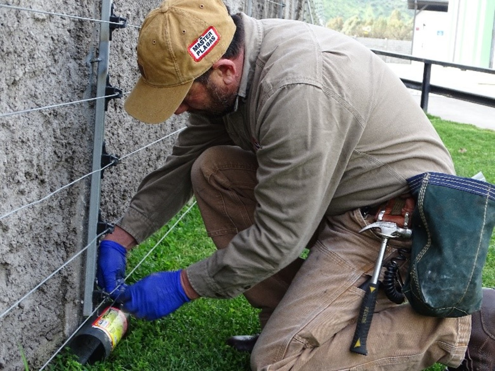
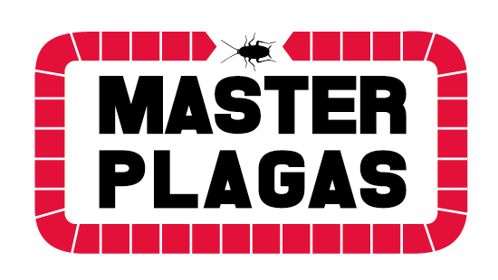
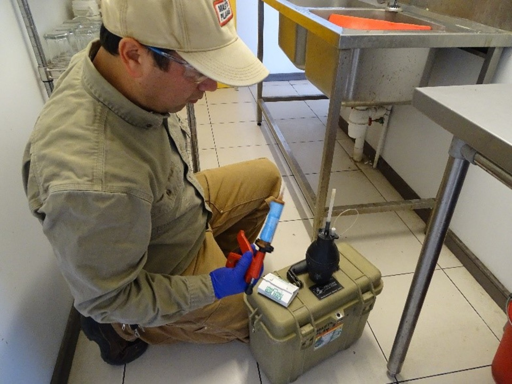
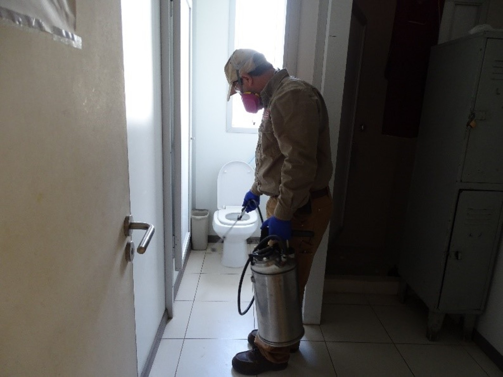
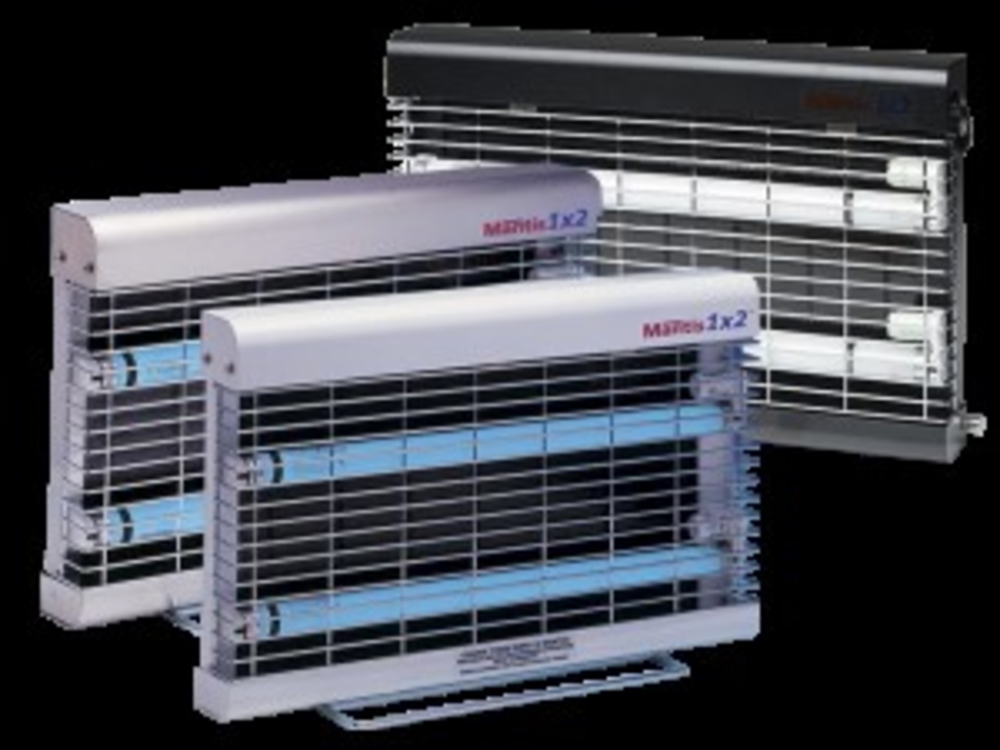
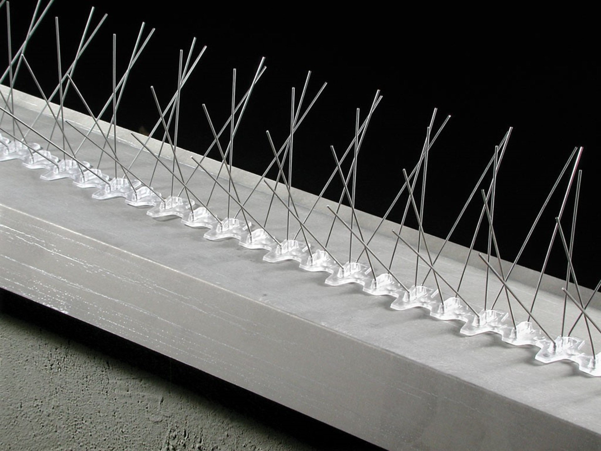
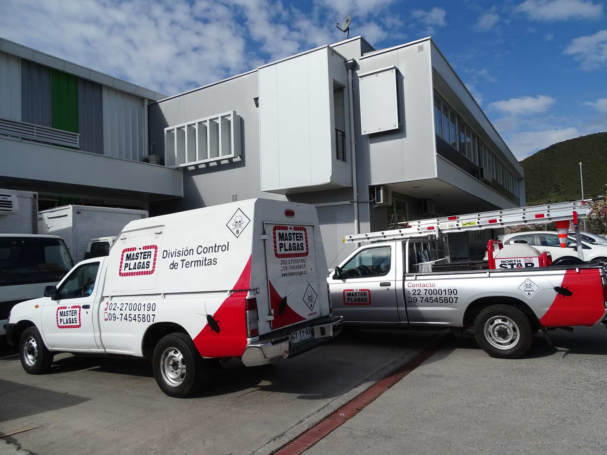

Desratización
Control de roedores.

ContactoSi deja pasar el tiempo, puede ser más difícil controlarlas. Técnicos de Master Control de Plagas atienden hogares, empresas e instituciones en Santiago.
Escríbanos por WhatsApp
Control de roedores.

Control de cucarachas y otros insectos.

Sanitización de recintos.

Equipos para el control de insectos voladores.

Control de aves.
Nuestros técnicos se preocupan de asesorar en las posibles mejoras estructurales y de informar constantemente del servicio realizado.

Federico Errázuriz 696, Bodega 12
Pudahuel, Santiago
Lunes a sábado, de 09:00 a 17:00. Domingo cerrado.